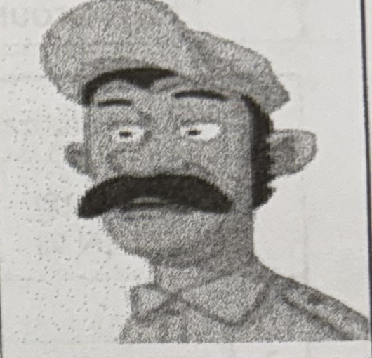
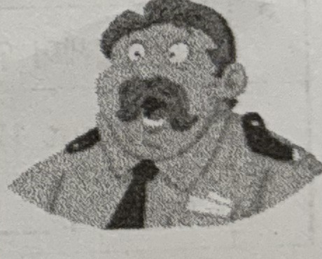

목동중1 학교 프린트 L4~7 — 초압축본 (Core 1/3 · 시험 직전용) [정답]
파트별 원본 프린트의 약 1/3 — 목동중 기출 유형에 실제로 쓰이는 문장·단어·규칙만 남긴 시험 직전용. 모든 내용은 학교 프린트 원문 그대로(지우기만 함) · 같은 유형 반복 문항·A 대화·대화 해석 줄은 생략
Part 1. 교과서 (Reading 본문 · 본문필사 · 본문 이해 문제)
◆ Core 기준 — 교과서 본문·목격자 진술·Reading Questions·본문 불일치 고치기·본문 Key point는 그대로 출제되므로 유지 — 쪽수별 질문 모음만 제외
ㄷ | 목동중학교 | Lesson 5 | 1학년 _____ 반 _____ 번 |
2026년 월 일 | Reading | 이름 : |
Who Threw a Cake at the Monalisa? 누가 ‘모나리자’에 케이크를 던졌나?
※ 교과서 P82-84를 참고하여 문제를 해결하세요.
단어 | throw의 과거형: threw eyewitness: 목격자 following: 다음(의) criminal: 범인 |
turn around: 뒤돌아보다 see의 과거형: saw about: 약, 대략 a little: 조금 |
|
|

Ann Jones, a visitor (Ann Jones, 방문객) | |||||||||||||
|
| ||||||||||||

문법 | ① was looking 이 시제를 뭐라 하나요? : ㄱㄱㅈㅎㅎ → 과거진행형 / 해석은? ~ ㅎㄱ ㅇㅇㄷ → ~하고 있었다 |
② the painting이 가리키는 것은? : the Monalisa (‘모나리자’ 그림) | |
③ 비교급 문장 만들기: S(주어) + (be) ㄷ ㅅ + ㅂ ㄱ ㄱ(er) + than + ㅂ ㄱ ㄷ ㅅ (ㄷㅅ=동사, ㅂㄱㄱ=비교급, ㅂㄱㄷㅅ=비교 대상) |
Reading Questions |
1. What happened at the Botero Museum last Saturday? → Someone threw a cake at the Monalisa. 2. How many eyewitnesses were there? → There were four eyewitnesses. 3. How tall is Ann Jones? → She is about 170 cm tall. ◆ Reading Questions 답안은 원본에 정답 표기가 없어 본문 근거로 작성한 예시 답안입니다. |
단어 | janitor: 청소부 run away: 도망가다 fall off: ~에서 떨어지다 wig: 가발 run after: ~을 뒤쫓다 |
In fact: 사실 guard: 경비원 a piece of: 한 조각(의) find의 과거형: found |
Carlos Diaz, a janitor (Carlos Diaz, 청소부) | |||||||||||||||||||
|  | ||||||||||||||||||
Diego Perez, a guard (Diego Perez, 경비원) | ||||||||||
|  | |||||||||
Reading Questions |
4. Why couldn’t Carlos catch the man? → Because the man was faster than him(Carlos). 5. Where did Diego find the cake box? → He found it next to the wheelchair. 6. Which bakery was the cake box from? → It was from Camila’s Bakery. |
ㄷ | 목동중학교 | Lesson 5 | 1학년 ___반 ___번 |
2026년 월 일 | Reading(본문확인) | 이름 : |
B 신문 기사를 읽고, 본문의 내용과 일치하지 않는 부분 다섯 군데를 찾아 바르게 고쳐 써 봅시다.
| The Bogota Times Man Damages Monalisa in Botero Museum Last Friday, someone threw a cake at the Monalisa in the Botero Museum in Bogota, Colombia. According to four eyewitnesses, the suspect is a little shorter than 170 cm. He is a young man with long gray hair and blue eyes. He speaks only Spanish. The museum guard found a cake box from Camila's Bakery on the wheelchair. The police are looking for the suspect. |
|
(1) Friday → Saturday
(2) shorter → taller
(3) gray → brown
(4) Spanish → English
(5) on → next to
ㄷ | 목동중학교 | Lesson 6 | 1학년 ___반 ___번 |
2026년 월 일 | Reading | 이름 : |
A 본문의 내용과 일치하도록 각 사람의 말을 완성해 봅시다.
Olivia | I brought leftovers home to reduce food waste . |
Domingo | I learned that reusing is important for zero-waste living. So, I decided to fix my bag and reuse it. |
Emma | I took reusable container to pick up the food. I didn’t use any single-use plastic today. |
Minsu | I put some plastic and glass bottles into a recycling machine. I got some points in return, and I can use them like money . |
ㄷ | 목동중학교 | Lesson 6 | 1학년 ___반 ___번 |
2026년 월 일 | 본문 Key point 정리 | 이름 : |
1 | Join the Zero-Waste Challenge
|
2 | Every day, we produce lots of waste, and the Earth is getting sicker and sicker. produce 동: 생산하다 / lots of: 많은(= a lot of) / waste: UC/N(셀 수 없는 명사) / 「get 비교급 and 비교급」 점점 더 ~해지다 |
3 | Do you want to save the Earth? to save: to부정사의 명사적 용법 |
4 | Then, join the zero-waste challenge, and share your stories. 명령문(동사원형으로 시작) |
5 | Challenge 01 Reduce Food Waste reduce 동: 줄이다 |
6 | Olivia: My birthday was last Saturday, and my family and I ate out. ate out: eat out 외식하다 |
7 | There were lots of leftovers, but we brought them home. There were: There are의 과거형 / leftovers 명: 남은 음식 / them = leftovers |
8 | The next day, I made a nice lunch out of them. made A out of B: B로 A를 만들다 |
9 | FYI, you can find great cooking ideas for leftovers on the Internet. FYI: 참고로(For your information의 약어) |
10 | Challenge 02 Reuse reuse 동: 재사용하다 |
11 | Domingo: My dog tore my bag. tore: tear(찢다)의 과거형 (tear - tore - torn) |
12 | I wanted to buy a new one, but I thought again. to buy: to부정사의 명사적 용법 |
13 | I learned that reusing is important for zero-waste living. 동사의 목적어 역할을 하는 접속사 that 절 (주어로 쓰인 동명사 + 단수동사) |
14 | So, I decided to fix it and reuse it. to fix: to부정사의 명사적 용법 |
15 | I’m not very good at sewing, and I don’t think that the bag looks perfect. 「be good at + (동)명사」 ~을 잘하다 / 동사의 목적어 역할을 하는 접속사 that 절 / 「감각동사 look + 형용사」 ~해 보이다 |
16 | I guess it’s all right. 목적어 절을 이끄는 접속사 that 생략 (I guess (that) it’s all right.) |
17 | Challenge 03 Say No to Single-Use Plastic single-use 형: 1회용의 |
18 | Emma: I often use food delivery services, but today I didn’t. often: 빈도부사(일반동사 앞) / delivery 명: 배달 |
19 | Instead, I walked to my favorite restaurant with a reusable container and picked up the food. instead 부: 대신에 / reusable 형: 재사용할 수 있는 / container 명: 용기, 그릇 / pick up: ~을 찾다[찾아오다] |
20 | I heard that plastic never goes away completely. 접속사 that(명사절, 목적어) / go away: 없어지다 / completely 부: 완전히 |
21 | I didn’t use any single-use plastic today.
|
22 | I felt good! 「감각동사 feel + 형용사」 ~하게 느끼다 |
23 | Challenge 04 Recycle recycle 동: 재활용하다 |
24 | Minsu: Yesterday, I took some plastic and glass bottles to a recycling machine near my house. take A to B: A를 B로 가져가다 |
25 | I put them into the machine one by one, and I got some points in return. put A into B: A를 B에 넣다 / one by one: 하나하나씩 / in return: 대신에, 답례로 |
26 | What can I do with those points?
|
27 | Well, I can use them like money. them = points / like 전: ~처럼 |
28 | Don’t you think that’s cool? think 뒤 접속사 that 생략 / that’s의 that: 앞 문장 내용을 가리킴 / cool 형: 멋진, 근사한 |
Part 2. 어휘 (Vocabulary · Words)
◆ Core 기준 — 영영풀이 표(철자·영영풀이 고르기) + 숙어 빈칸 — [보기] 고르기(표와 같은 내용)는 제외
ㄷ | 목동중학교 | Lesson 5 | 1학년 반 번 |
2026년 월 일 | Vocabulary | 이름 : |
★ 영영풀이를 읽고 빈칸에 영어 단어 또는 한글 뜻을 쓰세요.
No | 단어 | 한글 뜻 | 영영 풀이 |
3 | crime | 범죄 | n. an action that the law does not allow |
4 | criminal | 범죄자 | n. a person who does something against the law, like stealing or hurting others |
5 | damage | 손상을 입히다 | v. to physically harm something |
8 | eyewitness | 목격자 | n. someone who saw a crime or an accident |
9 | fall off | 떨어지다 | to drop to the ground from a high object |
12 | guard | 경비원 | n. a person whose job is to protect a person, place or thing from danger or attack |
14 | janitor | n. 청소부, 관리인 | n. a person in charge of cleaning and fixing things in a building |
18 | reason | n. 근거 | n. something that makes it right or fair to do something |
20 | run away | 도망치다 | to leave a place or person secretly and suddenly |
21 | scene | n. 현장, 장면 | n. a place where something happens; a piece of a film or play, usually showing one situation |
23 | statement | n. 진술 | n. something that you say or write officially |
24 | steal | v. 훔치다 | v. to take something that belongs to someone else |
26 | suspect | n. 용의자 | n. a person who is believed to be guilty of something |
B 우리말과 의미가 같도록 빈칸에 알맞은 말을 쓰시오.
1 그는 비밀 코드를 풀었다.
→ He solved the secret code.
2 뒤를 돌아서 눈을 떠. 짜잔! 너를 위한 거야.
→ Turn around and open your eyes. Ta-da! It's for you.
3 페인트가 벽에서 떨어지기 시작하고 있다.
→ The paint is starting to fall off the wall.
4 디저트로 케이크 한 조각 먹을래?
→ Would you like to have a piece of cake for dessert?
5 나는 매일 저녁 친구들과 전화로 이야기하는 것을 좋아해.
→ I like to talk on the phone with my friends every evening.
◆ | 목동중학교 2026년 월 일 | Lesson 6 Vocabulary [정답] | 1학년 ______반 ______번 이름 : |
번호 | 단어 | 뜻 | 영영 풀이 |
1 | challenge | 도전 | n. something that needs great mental or physical effort to be done successfully |
2 | completely | 완전히 | ad. in every way |
3 | container | 그릇, 용기 | n. an object for holding things, such as a can, box, or bottle |
4 | delivery | 배달 | n. the act of taking goods, letters, etc. to people’s houses or places of work |
5 | eat out | 외식하다 | to eat in a restaurant |
6 | environment | 환경 | n. the natural world, including water, air, land, and plants |
8 | in return | 대신에, 답례로 | as a response, exchange, or reward for something |
11 | leftover | 남은 음식 | n. food remaining after a meal |
17 | plog | 플로깅하다 | v. to pick up trash while jogging |
18 | produce | 생산하다 | v. to make or grow something |
19 | recycle | 재활용하다 | v. to put old paper, glass, or other materials through a special process so that they can be used again |
20 | reduce | 줄이다 | v. to make something less or smaller |
22 | sew | 바느질하다 | v. to use a needle and thread to make or fix clothes |
24 | tear | 찢다 | v. to pull paper, cloth, or another material into two pieces |
C 우리말과 의미가 같도록 빈칸에 알맞은 말을 쓰시오.
1 나는 잘 잊어버려서 항상 메모를 한다.
→ I am forgetful, so I always write things down.
2 일회용 비닐봉지는 환경에 좋지 않다.
→ Single-use plastic bags are bad for the environment.
3 나는 종종 플라스틱 병을 재사용하여 식물에 물을 준다.
→ I often reuse plastic bottles to water my plants.
4 저녁식사 후 바로 우리는 공원에 갔다.
→ We went to the park right after lunch.
5 나는 친구의 숙제를 도와주었고, 그 대가로 그는 내 프로젝트를 도와주었다.
→ I helped my friend with his homework, and in return, he helped me with my project.
◆ | 목동중학교 2026년 월 일 | Lesson 7 Vocabulary [정답] | 1학년 ______반 ______번 이름 : |
번호 | 단어 | 뜻 | 영영 풀이 |
1 | be in charge of | ~을 담당하다 | to manage or take control of something or someone |
2 | calm | v. 진정시키다 | v. to make someone stop feeling upset, angry, or excited |
3 | capture | v. 포착하다 | v. to photograph, film, record, paint, etc. somebody or something |
5 | delete | v. 지우다, 삭제하다 | v. to remove something from a written or electronic text |
6 | director | n. 감독 | n. a person in charge of a film or play who tells the actors and staff what to do |
7 | editor | n. 편집자 | n. a person who makes changes to texts or films |
8 | effect | n. 효과 | n. lights, sounds, special scenery, computer images, etc. used in a play or film, especially in order to show things that do not normally exist or happen |
11 | location | n. 장소 | n. a particular place or position that something is in |
15 | photographer | n. 사진작가 | n. a person who takes photographs, either as a job or hobby |
17 | record | v. 녹음하다, 녹화하다 | v. to store music, sound, or pictures on tape or disks |
19 | shoot | v. 촬영하다 | v. to use a camera to record a video or take a photograph |
24 | take care of | ~을 돌보다 | to protect someone or something and provide the things that person or thing needs |
26 | wrangler | n. 조련사 | n. someone who controls and looks after animals, especially horses or cows on a large farm |
C 우리말과 의미가 같도록 빈칸에 알맞은 말을 쓰시오.
1 나는 모든 종류의 음악을 즐긴다.
→ I enjoy all kinds of music.
2 그녀는 세계적으로 유명한 책을 썼다.
→ She wrote a world-famous book.
3 그들은 교실 청소를 맡을 것이다.
→ They will be in charge of cleaning the classroom.
4 그녀는 영화에서 의사의 역할을 한다.
→ She plays the role of a doctor in the movie.
5 캠프파이어 동안 우리는 별빛 아래에서 이야기 나누기를 즐겼다.
→ During the campfire, we enjoyed talking under the stars.
Part 3. 대화체 (Listening · Listen & Talk · 의사소통 기능)
◆ Core 기준 — 기능 표현 상자·핵심 표현 해설 + 교과서 C 대화(흐름·사실 관계) — A 대화·해석 줄은 제외
ㄷ | 목동중학교 | Lesson 5 | 1학년 반 번 |
2026년 월 일 | Listening | 이름 : |
▶ 허락 구하고 답하기 •상대방에게 허락을 구할 때는 “May(Can) I ~?(~해도 되니?)”라고 물어볼 수 있어요. •허락할 때의 대답은 Yes, you may. 또는 Sure./Sure, go ahead ./ Of course./ No problem 등이고, 허락하지 않을 때는 No, you may not./I’m sorry , but you can’t . 라고 해요. | ▶ 금지하기 •금지를 나타낼 때 「must not[ mustn’t ]+동사원형」으로써 ‘~하면 안 돼.’라는 의미를 나타낼 수 있어. |
▣ 핵심 표현 해설 — 허락 구하기 / 금지하기 · ① 허락 구하기 - May I ~? (정중·격식) / Can I ~? (구어체) / Could I ~? (가장 정중) - May 는 상대가 ‘허락을 부여한다’는 느낌이라 박물관 직원·부모·교사 등 권한자와의 대화에 잘 어울립니다. · ② 허락할 때의 대답 - Yes, you may. / Sure. / Sure, go ahead. / Of course. / No problem. - go ahead = ‘그렇게 하세요’ 라는 뜻의 관용 표현입니다. · ③ 거절할 때의 대답 - No, you may not. / I’m sorry, but you can’t. / I’m afraid you can’t. - may 에는 축약형이 없습니다. mayn’t (✗) → No, you may not. 로 써야 합니다. - 「I’m afraid」는 but 없이 「I’m afraid (that) you can’t.」 로 이어 씁니다. · ④ 금지하기 : must not [mustn’t] + 동사원형 - ‘~하면 안 된다’ 는 강한 금지. 규칙·법·표지판에 자주 쓰입니다. - ★ must not ↔ don’t have to 구별이 시험 최다 출제 포인트입니다. - You must not talk. = 말하면 안 된다 (금지) - You don’t have to talk. = 말할 필요가 없다 (불필요) - A-1에서 W가 ‘You don’t have to.’ 라고 한 것은 ‘(전화를 끌) 필요는 없어요’ 라는 뜻입니다. · ⑤ 문항별 추가 포인트 - A-1 Texting is OK. → 동명사(-ing)가 주어. 동명사 주어는 단수 취급하므로 is 를 씁니다. - A-1 turn off ↔ turn on : 전원을 끄다/켜다. 목적어가 대명사면 turn it off 처럼 사이에 넣습니다. - A-3 don’t run : 명령문의 부정은 「Don’t + 동사원형」. - A-4 bottled water : ‘병에 든 물’. bottled 는 과거분사가 형용사로 쓰인 형태입니다. - A-4 any food : 부정문에서 ‘어떤 ~도’ 의 의미로 any 를 씁니다. |
C
M: Everybody, look over here, please. This is Sunflowers by Van Gogh. G: Wow, this is my favorite painting. May I take a picture of it? M: Yes, you may, but you must not use the flash. G: Why not? It’s a little dark in here. M: I’m sorry, but using the flash can damage paintings. G: Oh, I didn’t know that. 아, 몰랐어요. M: Everyone, we’ll move on to Monet’s paintings next. G: Great! 좋아요! |
◆ | 목동중학교 2026년 월 일 | Lesson 6 Listening [정답] | 1학년 ______반 ______번 이름 : |
▶ 도움 요청하고 답하기 A: Can you please fix my bike? B: Sure. No problem. / I’m sorry, but I can’t. | ▶ 거절의 이유 말하기 I’m sorry, but I can’t. I’m busy now. |
C
B: Hi, Yuna. What are you doing here?
G: Hi, Alex. I’m plogging with my club members.
B: Excuse me?
뭐라고?
G: Plogging. It means jogging and picking up trash at the same time.
B: Sounds cool! So you’re a member of a plogging club.
G: Yes. We plog together every Saturday morning from 10 to 12. Interested?
B: Well, I’ll think about it.
G: OK. By the way, can you please help me with this trash bag? It’s heavy.
B: Sure. No problem.
Part 4. 어법 (Grammar · Practice)
◆ Core 기준 — 규칙 정리 + 기출형 연습(형태 변형·수일치 오류·배열영작)만 — 같은 유형 반복 문항은 제외
ㄷ | 목동중학교 | Lesson 4 | 1학년 ___반 ___번 | 문법 |
2026년 월 일 | be going to | 이름 : |
1. be going to의 형태
: 가까운 ㅁ ㄹ(미래)의 일이나 ㄱ ㅎ(계획)을 나타내며 ~할 것이다 , ~할 예정이다 라는 뜻으로 쓰인다.
: 「주어 + be going to + ㄷ ㅅ ㅇ ㅎ(동사원형)」의 형태로 씀. *구어체에서 “going to”를 줄여서 gonna 로 표현하기도 함.
He is going to play soccer after school. 그는 방과 후에 축구를 할 것입니다.
I am going to meet Jenny and Sue tomorrow. 나는 내일 Jenny와 Sue를 만날거야.
2. be gong to & will 비교하기
be going to | will |
미래에 대한 계획 | (그 순간 결정된) ~하겠다 라는 의지 |
A: There’s no milk. B: I know. I’m going to go and get some when this TV shows finishes. | A: There’s no milk. B: I will go and get some milk right now. |
[Let’s practice!] 우리말과 일치하도록 주어진 단어를 활용하여 문장을 완성해 봅시다. (부정형은 축약할 것)
1. 나는 내 방을 청소할 것이다. (clean) → I am going to clean my room.
2. 그들은 저녁으로 파스타를 먹지 않을 것이다. (eat) → They aren’t going to eat pasta for dinner.
3. 너는 방과 후에 영화를 볼 예정이니? (watch) → Are you going to watch a movie after school?
ㄷ | 목동중학교 | Lesson 5 | 1학년 반 번 |
2026년 월 일 | Grammar A-비교급/최상급 | 이름 : |
◆ 비교급 1. 비교급의 쓰임 : 둘 이상을 비교하여 말할 때 사용 2. 짧은 단어 비교급 만드는 방법 1) 형용사/ 부사 원급 + er + than + 비교대상 • I’m tall. 나는 키가 커. (원급) → I’m taller than you. 나는 너보다 키가 더 커. (비교급) • I can run fast. 나는 빨리 달릴 수 있어. (원급) → I can run faster than him. 나는 그보다 더 빨리 달릴 수 있어. (비교급) 3. 긴 단어 비교급 만드는 방법 1) more 형용사/ 부사 원급 + than + 비교대상 • This sofa is more comfortable than the other one. 이 소파가 다른 소파보다 더 편해.(비교급) • My dad drives more carefully than my brother. 나의 아빠는 나의 오빠보다 더 조심스럽게 운전해.(비교급) 4. 짧은 단어와 긴 단어 구분하기 1) 짧은 단어란? ‘1음절’, ‘2음절’ 단어 중 ( y )로 끝나는 단어 • thick 두꺼운 → thicker • happy 행복한 → happier 2) 긴 단어란? ‘2음절’ 이상 단어 • difficult 어려운 → more difficult 더 어려운 5. 비교급 강조 : very 를 쓰지 않고 much , still , even , far , a lot (훨씬)을 쓴다. • Today is much hotter than yesterday. 오늘은 어제보다 훨씬 더 덥다.
◆ 최상급 1. 최상급의 쓰임: ‘( 가장 ) 맛있어’, ‘제일 좋아’ 등 셋 이상을 비교해서 최고의 것을 말할 때 사용. 2. 최상급 만드는 방법 : ① 짧은 단어 : the 형용사/부사 최상급 + (명사) ② 긴 단어 : the most 형용사/부사 + (명사) • David is the tallest student in our class. 데이비드는 우리 학급에서 키가 가장 큰 학생이야. • Happiness is the most important thing in my life. 행복은 나의 삶에서 가장 중요한 거야. ③ 최상급 뒤에는 주로 「 in +장소나 범위」 또는 「 of +비교 대상」을 씁니다. • Jerry is the cutest mouse in the world. 제리는 세상에서 가장 귀여운 쥐이다. • Tom is the most foolish cat of all. 톰은 모두 중에서 가장 어리석은 고양이이다. 3. 비교급으로 최상급 표현: 비교급 + than + any other + 단수명사 • Jerry is the cutest mouse in the world. 제리는 세상에서 가장 귀여운 쥐이다. • → Jerry is cuter than any other mouse in the world. 제리는 세상의 어떤 다른 쥐보다도 더 귀엽다. |
규칙 | 원급 | 비교급(더~) | 최상급(가장~) |
① ‘-e’로 끝나는 단어 r / st 만 붙임 | nice | nicer | nicest |
large | larger | largest | |
② ‘-y’로 끝나는 단어 y를 i 로 바꾸고 er/est | busy | busier | busiest |
easy | easier | easiest | |
early | earlier | earliest | |
③ 단모음+단자음으로 끝나는 단어는 마지막 자음을 한 번 더 쓰고 er/est 붙임 | big | bigger | biggest |
hot | hotter | hottest | |
④ 불규칙 | many/much | more | most |
little | less | least | |
good | better | best | |
well | |||
bad | worse | worst |
B. 우리말과 의미가 같도록 주어진 단어들을 활용하여 문장을 완성해 봅시다. (필요하면 형태 변형할 것)
1. 나에게는 달리기가 수영보다 쉽다. (swimming, easy, for, than, me)
→ Running is easier for me than swimming .
2. 돌고래가 다른 바다 동물보다 더 영리하다. (other, than, smart, sea animals)
→ Dolphins are smarter than other sea animals .
4. 세상에서 가장 인기 있는 스포츠는 뭐니? (popular, the world, sport, most, in, the)
→ What is the most popular sport in the world ?
5. 수학이 모든 과목 중에서 제일 어렵다. (most, all, math, the, is, of, the subjects, difficult)
→ Math is the most difficult of all the subjects .
▣ 반드시 외워야 하는 불규칙 · 두 가지 형태를 갖는 단어 · 기본 불규칙 - good / well → better – best (‘좋은’ 과 ‘잘’ 이 같은 형태로 변합니다) - bad / ill → worse – worst (‘나쁜’ 과 ‘아픈’ 이 같은 형태) - many(수) / much(양) → more – most - few(수) → fewer – fewest · little(양) → less – least · ★ 뜻에 따라 형태가 달라지는 단어 (시험 단골) - old → older / oldest : 나이·오래됨 전반. → He is older than me. - old → elder / eldest : 형제·자매의 서열. 명사 앞에서만 씁니다. → my elder brother (than 과 함께 쓰지 않음) - late → later / latest : 시간이 ‘더 늦은 / 최신의’ → the latest news - late → latter / last : 순서상 ‘후자의 / 마지막의’ → the latter half - far → farther / farthest : 물리적 거리 → farther from here - far → further / furthest : 정도·추가 → further information · 형태 만들기 요령 - -ly 로 끝나는 부사는 more / most 를 씁니다. → slowly – more slowly – most slowly - 단, early 는 예외로 earlier – earliest 입니다. - clever, quiet, simple 등 일부 2음절 단어는 -er/-est 와 more/most 두 형태 모두 표준으로 인정됩니다. - -ful, -less, -ing, -ous, -ive 로 끝나는 단어는 거의 모두 more / most 를 씁니다. - → useful, useless, interesting, famous, expensive |
ㄷ | 목동중학교 | Lesson 5 | 1학년 _____ 반 _____ 번 |
2026년 월 일 | There is/are | 이름 : |
1) There is / are 기본 개념 ‘어떤 사람이나 대상이 있다’는 사실을 나타내는 표현으로 「~가/이 있다 」라는 뜻이다. 2) There is / are 문장 형태(구조) ① There is + ( 단수 )명사~. → There is a computer on the desk. (책상 위에 컴퓨터가 있다 .) ② There are + ( 복수 )명사~. → There are pictures on the wall. (벽에 사진들이 있다 .) 3) There is / are의 과거형 : There was / were + (단수/ 복수)명사. 「~이 있었다 .」 4) There is/are 부정문 : be동사의 부정문과 같이 be동사 뒤에 not 을 붙입니다. be동사와 not을 축약하여 쓸 수 있습니다. ① There is not a cup on the shelf. → There isn't a cup on the shelf. ② There are not flowers in the garden. → There aren't flowers in the garden. 5) There is/are 의문문 : be동사와 there의 순서를 바꿔 「 Is/Are + there + (단수/복수)명사 ~?」로 씁니다. ① Is there a dog in the backyard? (뒷마당에 강아지 한 마리가 있나요?) ② Are there children in the playground? (운동장에 아이들이 있나요?) ③ Were there any guests at the party? (파티에 손님들이 있었나요?) ◆ 개념 5)-③: 해석이 ‘있었나요?’(과거)이므로 Were가 정답입니다. (원본 필기의 Are는 오답) 6) There is/are 의문문의 대답 : 긍정은 「Yes, there+be동사.」, 부정은 「No, there+be동사+ not .」으로 씁니다. be동사와 not은 줄여서 쓸 수 있습니다. ① A: Is there a library near your house? (당신의 집 근처에 도서관이 있나요?) B: Yes, there is . / No, there isn't . ② A: Were there any mistakes in my report? (제 보고서에 실수가 있었나요?) B: Yes, there were . / No, there weren't . |
B. 각 문장의 틀린 부분을 밑줄 긋고 바르게 고쳐 써 봅시다.
1. Is there any other problems now? → Are
2. There wasn't many cars on the street yesterday. → weren't
3. Was there many people at the beach last weekend? → Were
C. 우리말과 일치하도록 주어진 단어를 이용하여 문장을 쓰시오.
1. 파티에는 사람들이 많았니? (there / many people / at / the party / are)
Were there many people at the party?
2. 하늘에 구름이 한 점도 없다. (there / any / not / clouds / in the sky / are)
There aren't any clouds in the sky.
◆ | 목동중학교 2026년 월 일 | Lesson 6 to 부정사 [정답] | 1학년 ______반 ______번 이름 : |
1. to부정사란? : (to + 동사원형)의 형태를 to부정사라고 합니다. 예) to eat, to play, to study, to be : to부정사는 문장에서 (명사, 형용사, 부사)처럼 쓰일 수 있습니다. 2. 명사적 용법의 to부정사 : to부정사가 문장에서 명사가 들어갈 자리에 사용되는 것을 명사적 용법이라고 합니다. : 명사적 용법의 to부정사는 주로 (주어, 목적어, 보어)의 역할을 합니다. |
|
① 주어로 쓰이는 경우 To + 동사원형 + 동사 … : ~하는 것은 … 해
(To read books) is fun. → 책을 읽는 것은 재미있다.
② 목적어로 쓰이는 경우 주어 + 동사 + to + 동사원형
I want (to be a doctor). → 나는 의사가 되기를 원한다.
We (hope to) win the game. → 우리는 그 경기에서 이기기를 희망한다.
They decided (to go home). → 그들은 집에 가기로 결정했다.
③ 보어로 쓰이는 경우 주어 + ( be동사 ) + to + 동사원형 주어가 무엇인지 설명해 주는 역할을 합니다.
My dream is (to travel the world). → 나의 꿈은 세계를 여행하는 것이다.
★ 동명사(~ing)만 목적어로 취하는 동사 vs to부정사(to 동사원형)만 목적어로 취하는 동사 (암기 요망) | |
Want/Wish (원하다) Hope (희망하다) Ask (요청하다) Tend (~하는 경향이 있다) Promise (약속하다) Refuse (거절하다) Intend (의도하다) Need (필요하다) Expect (기대하다) Decide (결정하다)
to부정사만 목적어로 취하는 동사 | Stop (멈추다) Finish (끝내다) Postpone (미루다) Delay (미루다) Imagine (상상하다) Quit (그만두다) Mind (꺼리다) Enjoy (즐기다) Give up (포기하다) Avoid (피하다) Keep (계속하다)
동명사만 목적어로 취하는 동사 |
◆ | 목동중학교 2026년 월 일 | Lesson 6 to 부정사 Practice [정답] | 1학년 ______반 ______번 이름 : |
A 우리말과 의미가 같도록 주어진 단어를 활용하여 문장을 완성해 봅시다.
3. 나는 영어 말하기를 잘하고 싶다.
→ I want to be good at speaking English. (want, be)
5. 그들은 새 아파트로 이사하기로 결정했다.
→ They decided to move to a new apartment. (decide, move)
B 대화에서 어법상 [[틀린]] 부분을 찾아 바르게 고쳐 써 봅시다.
1. A: What do you plan to do this weekend?
B: I plan go shopping with my friends.
go → to go
2. A: What do you want had for dinner?
B: I want chicken soup.
had → to have
C 우리말과 일치하도록 괄호 안의 단어들을 [[모두]] 활용하여 문장을 완성해 봅시다.
1. 너는 이 새로운 컴퓨터를 사고 싶니? (computer, buy, do, want, new, you, to, this)
→ Do you want to buy this new computer ?
2. 나의 여동생은 그 노래를 함께 부르기를 원한다. (sing, my, song, to, sister, together, hopes, the)
→ My sister hopes to sing the song together .
◆ | 목동중학교 2026년 월 일 | Lesson 6 접속사 that [정답] | 1학년 ______반 ______번 이름 : |
1. 접속사 that이란?
: 접속사 that은 두 문장을 연결하여 「 ~라는 것 」라는 뜻의 명사절을 만듭니다.
예) I know that she is kind. → 나는 그녀가 친절하다는 것을 안다.
즉, that + 주어 + 동사는 하나의 명사처럼 쓰입니다.
쓰임 | 문장 속 역할 | 예문 |
주어 | ~하는 것은 / ~라는 것은 | That he is honest is true. |
목적어 | ~하는 것을 / ~라는 것을 | I know that he is honest. |
보어 | ~라는 것이다 | The fact is that he is honest. |
★ 목적어로 쓰이는 that은 (생략)할 수 있습니다.
예: I think (that) he is right.
◆ | 목동중학교 2026년 월 일 | Lesson 6 접속사 that Practice [정답] | 1학년 ______반 ______번 이름 : |
B 우리말과 일치하도록 괄호 안의 표현을 활용하여 문장을 완성해 봅시다.
1. 나는 오늘 Max가 아프다고 들었다. (sick)
➜ I heard that Max is sick today.
2. 그는 역사 시험이 어려웠다고 생각했다. (the history test, difficult)
➜ He thought that the history test was difficult.